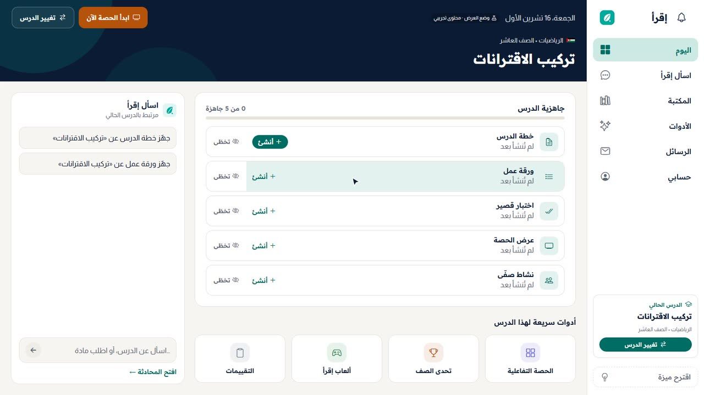
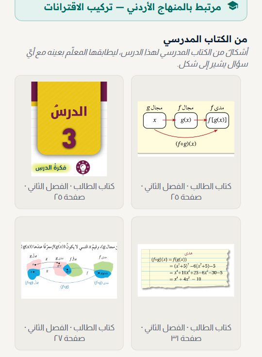

خطة الدرس، وورقة العمل، والاختبار — يُعدّها إقرأ من نتاجات التعلّم في المنهاج الأردني، وأنت تراجعها وتعدّلها لصفّك.
استمتع بالتجربة مجانًا • متوافق تمامًا مع متصفحات الأجهزة المحمولة والمكتبية

١٠ صفوف · ١٣ مادة · أكثر من ٤٬٥٠٠ نتاج تعلّم من مناهج المركز الوطني لتطوير المناهج
تطبيق أندرويد متوفر الآن على Google Playأنت تعرف طلبتك واحتياجاتهم. إقرأ يساعدك على إعداد المحتوى، وأنت تضيف خبرتك وتختار ما يناسب حصّتك.

حدّد الصف والمادة والوحدة والدرس، ليبني إقرأ المحتوى على نتاجات التعلّم الخاصة به.
يراجع إقرأ الإجابات الرياضية آليًا للمساعدة على تقليل الأخطاء، ويوضّح ما يحتاج إلى مراجعتك.
حضّر خطة الدرس، وأوراق العمل، والاختبارات، والأنشطة، وشرائح العرض. وأنشئ تقييمات تشاركها مع طلبتك برابط.
واجهة عربية واضحة ومحتوى مصمّم لمساعدة المعلّم في الأردن على التحضير والاستخدام داخل الصف.
اختر الصف والمادة والوحدة والدرس، ثم اطّلع على نتاجات التعلّم التي يبني عليها إقرأ المحتوى.
خطة درس، أو ورقة عمل، أو اختبار قصير، أو نشاط، أو شرائح عرض.
راجع المحتوى وأضف لمستك بما يناسب مستوى طلبتك، ثم اطبعه أو اعرضه في الصف.
شاهد كيف تحضّر حصّتك مع إقرأ
إقرأ مساعد تعليمي عربي للمعلمين في الأردن. يساعدك على إعداد خطط الدروس، وأوراق العمل، والاختبارات، والأنشطة، وشرائح العرض، انطلاقًا من الدرس ونتاجات التعلّم التي تختارها.
نعم. يعتمد إقرأ على نتاجات التعلّم الواردة في مناهج المركز الوطني لتطوير المناهج للدرس الذي تختاره ضمن المناهج المتاحة في المنصّة. ويمكنك تصفّح الصفوف والمواد والوحدات والدروس قبل إنشاء حساب.
يمكنك إعداد خطط دروس، وأوراق عمل، واختبارات قصيرة، وأنشطة صفية، وشرائح عرض، ورسائل لأولياء الأمور. كما يمكنك إنشاء تقييمات تشاركها مع طلبتك برابط، مع تصحيح إجاباتهم داخل المنصّة.
يستخدم إقرأ أداة تحقق رياضية لمراجعة الإجابات قبل عرضها. وإذا تعذّر التحقق من إجابة، يوضّح لك أنها تحتاج إلى مراجعة. تساعد هذه الخطوة على تقليل الأخطاء، وتبقى مراجعتك للمحتوى ضرورية قبل استخدامه مع طلبتك.
تضم المنصّة أكثر من ٥٠ زوجًا من الصف والمادة، من الصف الأول إلى العاشر، ومنها الرياضيات والعلوم والفيزياء والكيمياء والأحياء واللغتان العربية والإنجليزية والتربية الإسلامية والمهارات الرقمية، بأكثر من ١٨٠٠ درس ونتاجاتها. تختلف التغطية بحسب الصف والمادة؛ تصفّح صفحة المناهج للاطلاع على المتاح، وأخبرنا بما تحتاج إلى إضافته.
لا. يمكنك استخدام إقرأ مباشرة من المتصفح على الحاسوب أو الهاتف أو الجهاز اللوحي. وإن فضّلت تطبيقًا على هاتفك، فتطبيق إقرأ لأندرويد متوفر الآن على Google Play. تطبيق آيفون قيد التطوير.
نعم، استخدام إقرأ مجاني بالكامل خلال النسخة التجريبية. نواصل تطوير المنصّة وإضافة التحسينات بناءً على تجارب المعلمين وملاحظاتهم.
أفكار عملية للمعلم، مكتوبة للصف الأردني.
تطبيق إقرأ لأندرويد متوفر الآن على Google Play. حسابك نفسه يعمل في التطبيق وفي المتصفح.
حمّل التطبيق من Google Playعلى آيفون؟ التطبيق قيد التطوير، ونسخة المتصفح فيها كل شيء: app.iqrra.com
مادة تحتاجها؟ أداة تتمنّاها؟ خطوة يمكن أن تكون أسهل؟ شاركنا تجربتك واقتراحاتك، وساعدنا على تطوير إقرأ بما يخدم يومك الدراسي.
أو راسلنا على info@iqrra.com